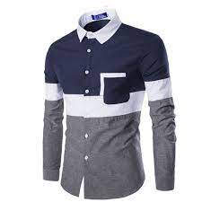
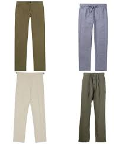

Due to its diverse nature of clothes the market is able provide the people with a variety
SHIRTS

trousers
- The market is known for its diverse foods and also fresh produce.
- I would recommend anyone to visit the market for shopping and also starting bussines there
- There are many varieties of clothes to select from the above are just a sample of what the market offers.
Places I want to avoid
- North pole
- I here this is cold!
- South pole
- This is also cold.
- Mountain Tops
- These are also cold.